Shinsung Power Technology:
IoT-Driven Productivity Platform
Revolutionizing factory operations through the IBM Garage methodology. We integrated IoT hardware with a custom SaaS platform to achieve 100% material traceability and predictive capacity modeling.
My Role
Workshop Facilitator, UI/UX Lead, Functional Architect, Strategy Definition
Project Scope
IoT Hardware Integration, SaaS Management Dashboard, ERP Data Synchronization
The Methodology: IBM Garage
We implemented the IBM Garage framework to bridge the gap between high-level business strategy and ground-level shop floor execution, ensuring rapid value delivery through four distinct phases.
01. Discover
Stakeholder mapping and rapid opportunity identification via collaborative ideation.
02. Define
User pain point analysis through Empathy Maps and As-Is Scenario Mapping.
03. Co-Create
MVP scope definition, platform architecture, and high-fidelity prototyping.
04. Co-Execute
Field deployment, IoT hardware setup, and shop-floor personnel training.
Phase 01: Opportunity Discovery
During the "Opportunity Discovery" workshop, we engaged leaders and department heads to rank 8 business opportunities. Through collaborative voting and feasibility analysis, "Software Automation" emerged as the primary focus for the MVP.
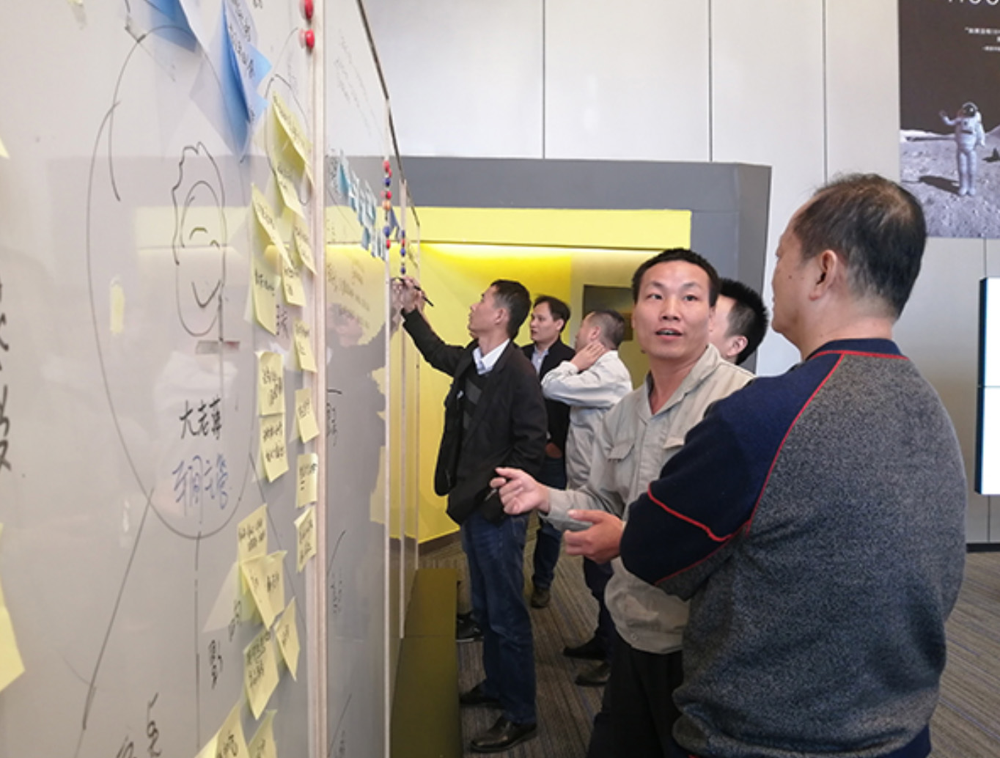
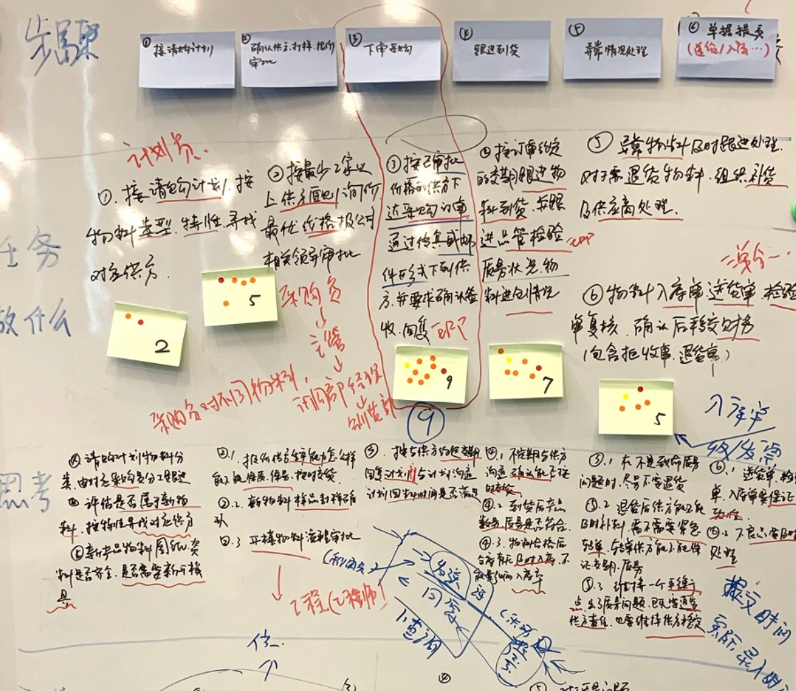
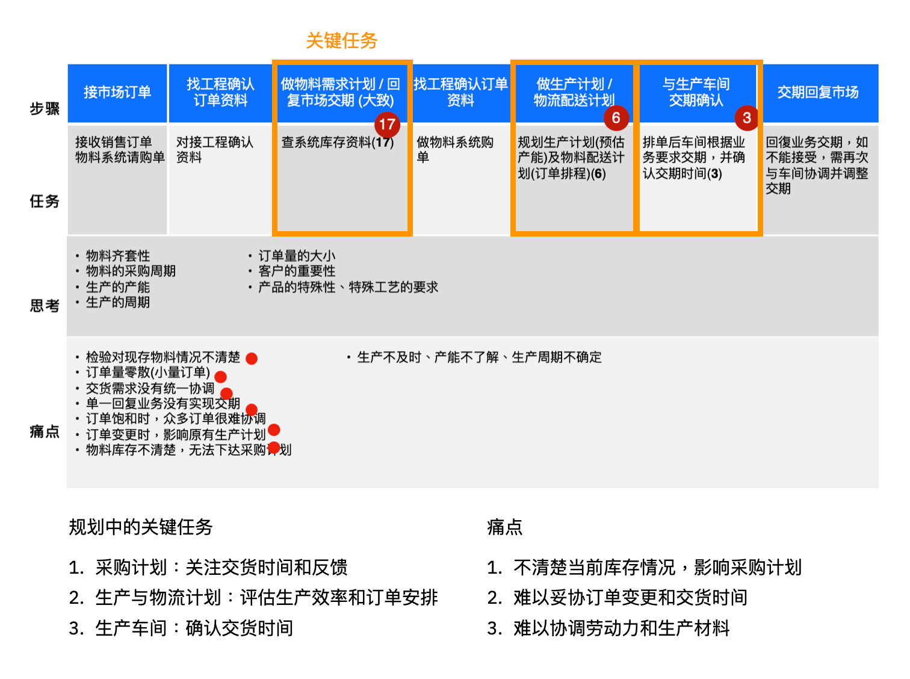
Categorizing pain points into Automation, Visibility, and Efficiency to ensure the project delivers immediate business ROI.
Phase 02: Defining User Pain Points
By mapping the "As-Is" workflow, we discovered that manual reporting was the core bottleneck, leading to data lag and inventory errors. We used Empathy Maps to deeply understand the frustrations of shop-floor workers.
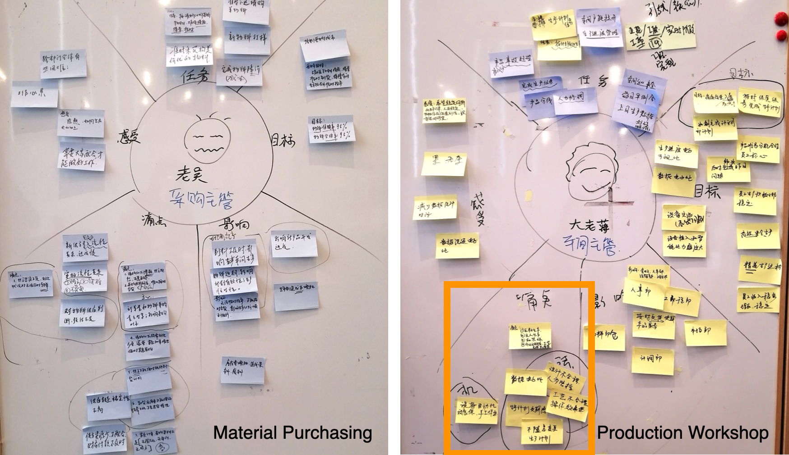
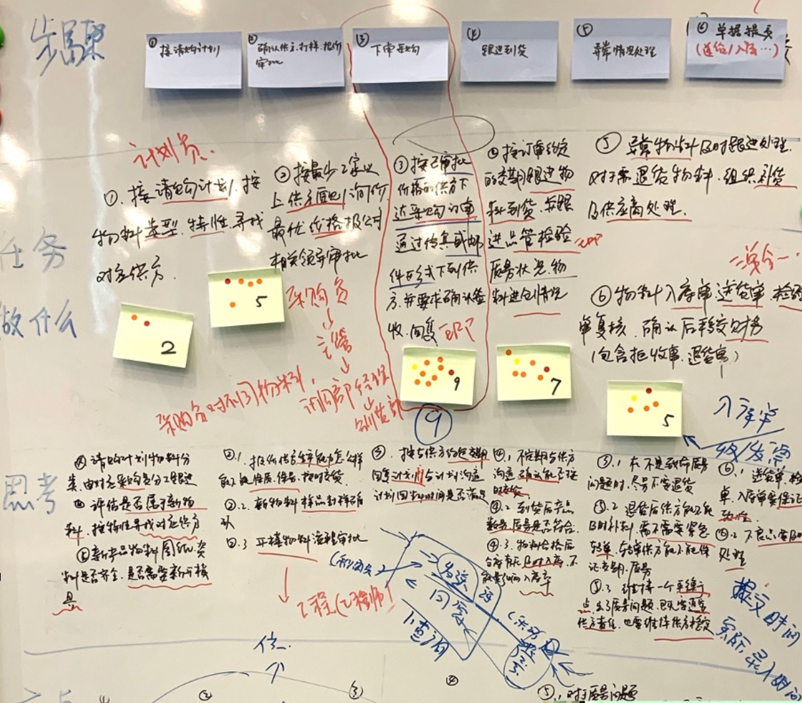
Transitioning from a paper-heavy manual environment to a real-time IoT-enabled digital workflow.
Phase 03: Platform UI & Functional Design
The MVP architecture was designed to synchronize with CRM and ERP data, ensuring 100% consistency. We focused on a real-time Productivity Dashboard and robust Member Management tools.
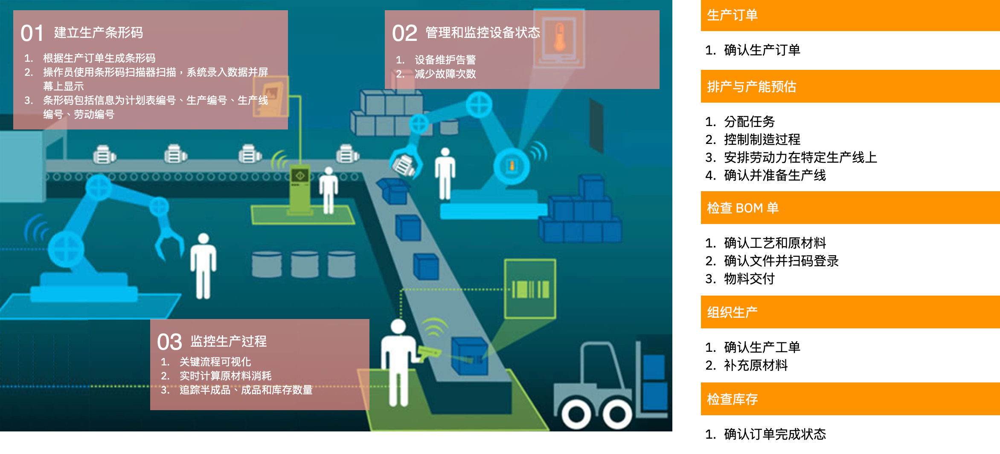
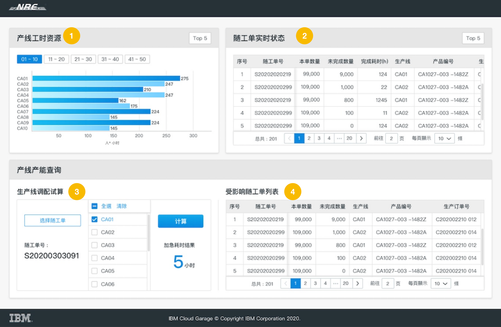
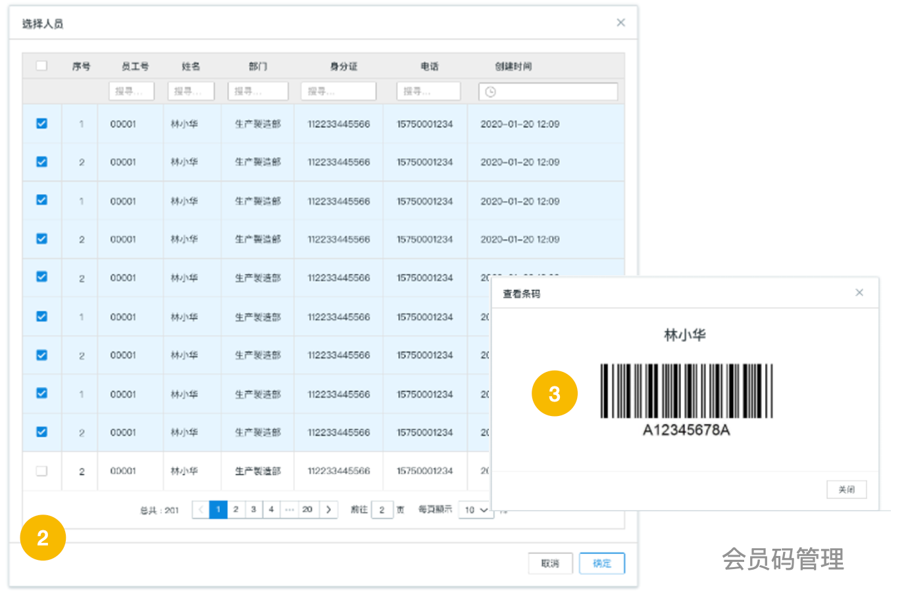
The system provides real-time line status tracking, automated capacity forecasting, and seamless member barcode integration.
Phase 04: IoT Shop Floor Execution
The "3-Step Scan" workflow was designed for high-efficiency field use. Rugged IoT scanners capture data at the source, eliminating manual entry and ensuring accurate, real-time material logs.
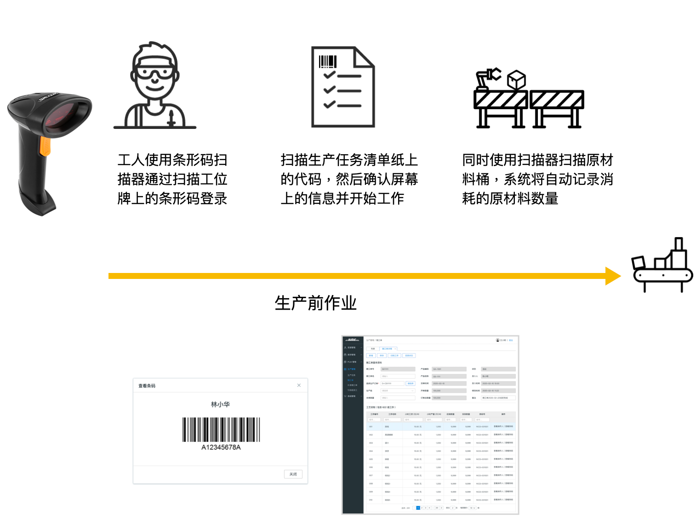
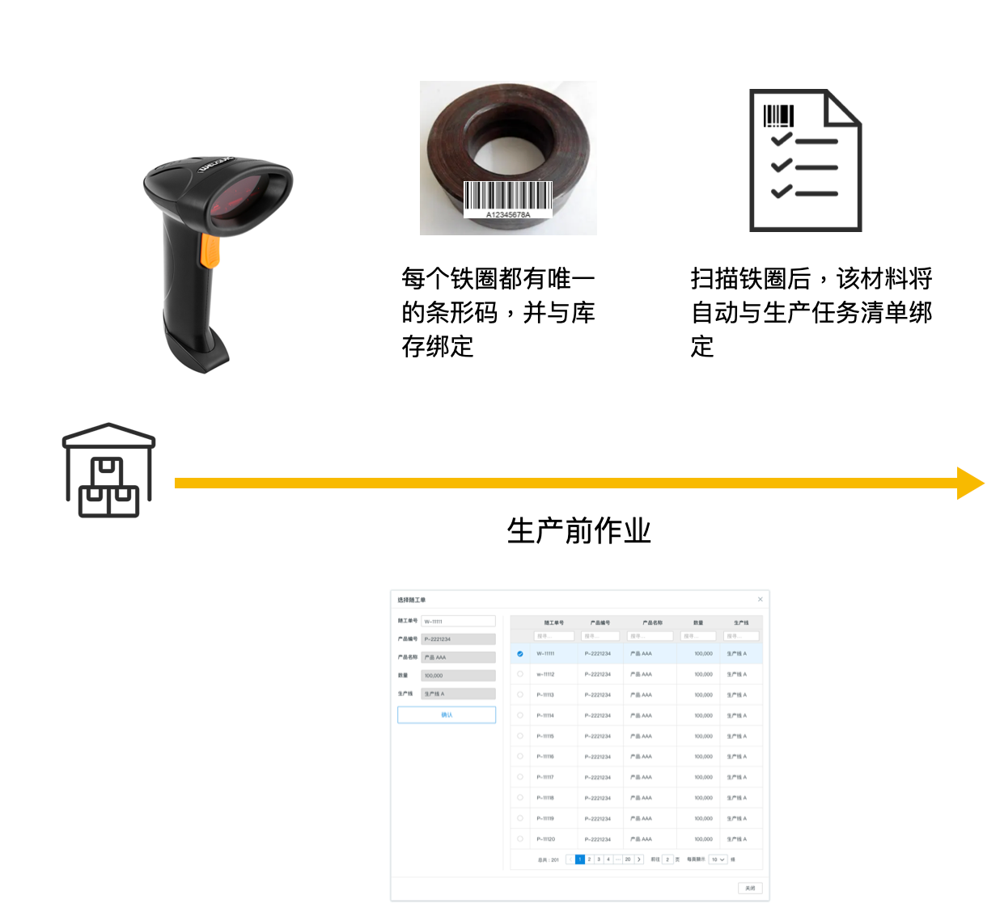
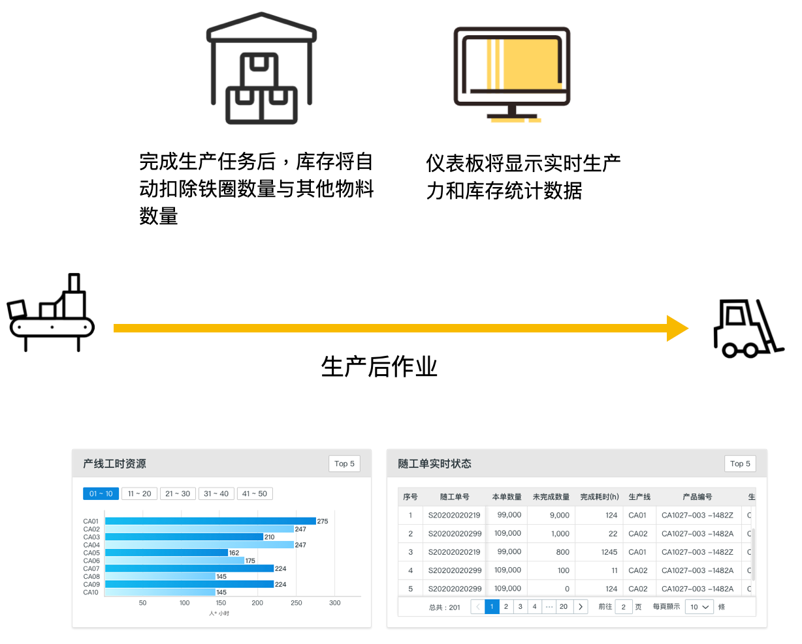
Step 1: Badge Scan (Login). Step 2: Task Sheet Scan (Start). Step 3: Material Bin Scan (Inventory Record). Logout is completed via a final badge scan.
Project Outcomes & Value
The transformation established full material flow control for Shinsung Power. Automated inventory consumption logs now support accurate cost accounting and lean production management.
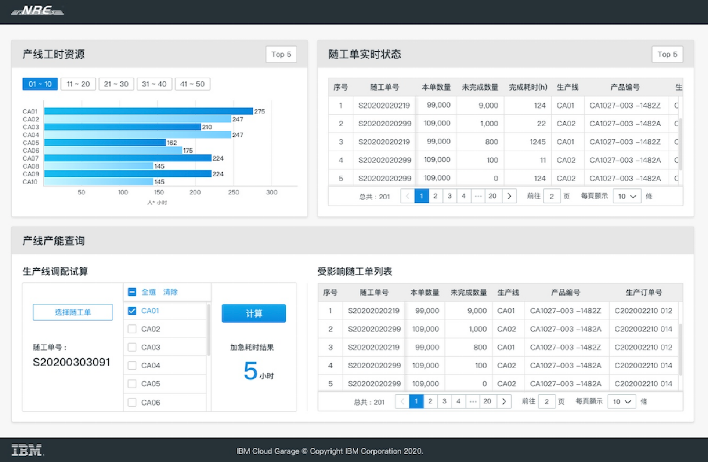
Eliminated production "Black Boxes" and automated wage calculations based on real-time task data, reducing administrative overhead by 40%.
MVP Development Roadmap
To ensure a sustainable digital transformation, the project was executed in a phased approach, prioritizing core infrastructure before advanced predictive modeling.
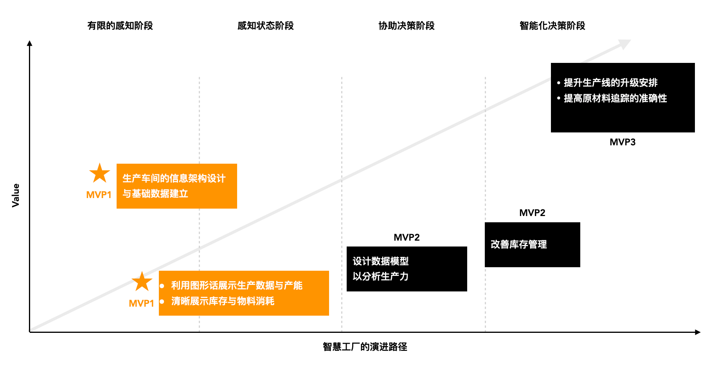
Defining the functional architecture: integrating core management modules with IoT data streams.
Infrastructure & Integration
Establishing CRM/ERP data synchronization and assigning unique digital IDs (Barcodes) to all shop-floor personnel to ensure data consistency.
IoT Field Deployment
Implementing the "3-Step Scan" workflow on the factory floor using rugged IoT scanners to capture real-time material consumption and task progress.
Visualization & Analytics
Launching the Productivity Dashboard to provide real-time visibility into line status and automated inventory deduction reports.